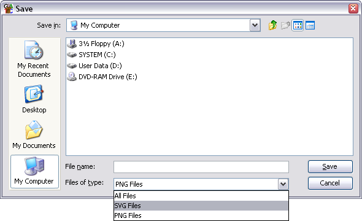

You can export any of the images you see in SeqMonk into two different graphics formats. Most dialogs which open to show you an image will have a save button at the bottom. To export the graphics you see in the main SeqMonk window you can select File > Export Current View from the main menu and then choose from the Genome View and the Chromosome View.
You can choose from two different formats for your exported images. You can select which of these you want by using the drop down selector box in the file selection dialog.

PNG images are the default selection. These are bitmap images, which means that you can only edit them in the same way that you would edit a photograph. You can't make these images any larger and they will be produced initially at the same size as you saw them on screen. They are the equivalent of taking a screenshot. These images can be opened in almost any program which can handle images, but are probably not of sufficient quality to use for publications.
SVG images are vector images which means that you can blow them up to any size and they will still look smooth. You can also break them apart and edit the individual components. SVG images can only be viewed and edited by a more limited range of software but these packages can render high-quality bitmap images from the SVG images and these can then be used in publications. We would recommend the free program Inkscape (www.inkscape.org) for editing SVG files, or you could use a commercial package such as Adobe Illustrator.